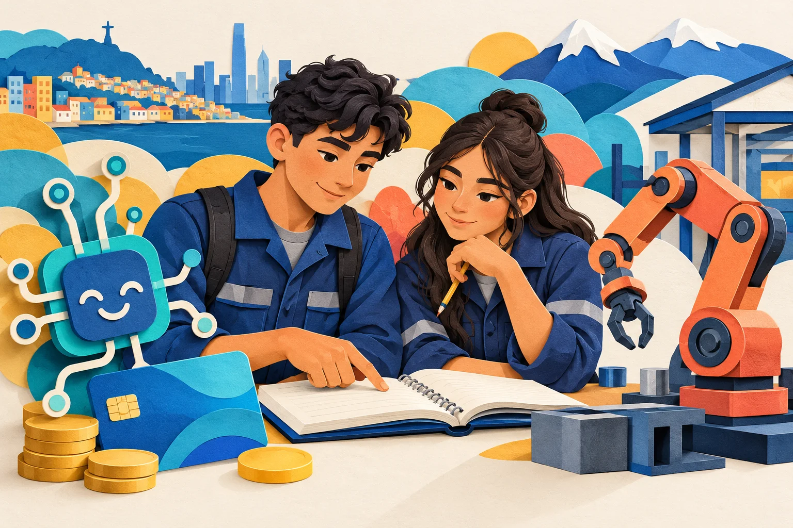
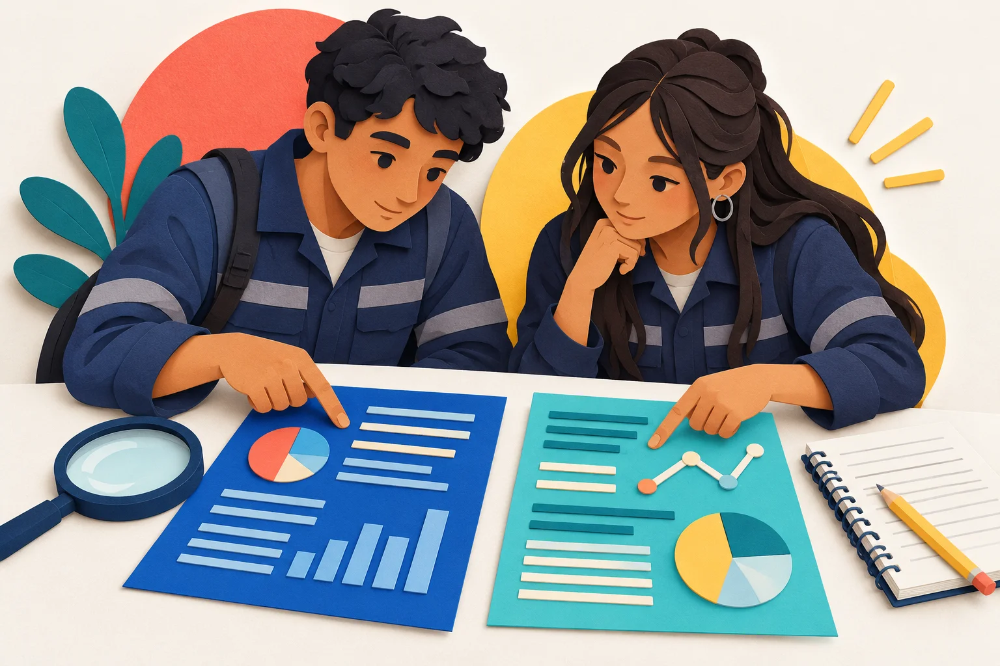

INICIO · 0–4 min
¿Qué cambio por la IA podría afectar tu futuro trabajo?
Comenten oralmente dos ejemplos del taller, de su vida o de las noticias.
¿Cómo saben que ese cambio está ocurriendo?

INICIO · 4–6 min
Normas de la clase
- Ambos leen, conversan y escriben.
- Escuchen y respeten opiniones distintas.
- Registren de dónde obtuvieron la información.
- Usaremos el teléfono de forma responsable para leer las fuentes y realizar la actividad.
INICIO · 6–10 min
Objetivo de la clase
DESARROLLO · Contenido y ejemplo · 10–20 min
Tema y propósito
Tema: de qué trata un texto.
Propósito: qué busca lograr con sus lectores.
Puede informar, convencer o advertir.
¿Qué parte del texto permite reconocer su propósito?
DESARROLLO · Contenido y ejemplo · 10–20 min
Postura y papel del emisor
Punto de vista: la postura que sostiene frente al tema.
Posicionamiento: desde qué papel habla: autoridad, investigador, empresa o trabajador.
Pregunten qué afirma, cómo lo expresa y qué intereses puede tener.
DESARROLLO · Contenido y ejemplo · 10–20 min
Argumento y evidencia
Argumento: una razón para sostener una postura.
Evidencia: un dato, documento o ejemplo que permite examinar esa razón.
¿Ese respaldo alcanza para afirmar lo que dice el autor?
DESARROLLO · Contenido y ejemplo · 10–20 min
Hecho, opinión y pronóstico
| Hecho | Describe algo que podemos comprobar. |
|---|---|
| Opinión | Expresa una valoración o juicio. |
| Pronóstico | Anticipa lo que podría ocurrir. |
Podemos comprobar que una persona hizo una declaración. Eso no demuestra que su pronóstico vaya a cumplirse.
DESARROLLO · Contenido y ejemplo · 10–20 min
Veracidad y confiabilidad
- ¿Quién publica y cuándo?
- ¿Dónde está el respaldo de lo que afirma?
- ¿Otra fuente permite corroborarlo?
Un cargo importante, un número o una página atractiva no bastan por sí solos.
DESARROLLO · Contenido y ejemplo · 10–20 min
Contrastar información
Buscamos coincidencias, diferencias y aportes con un criterio común.
- Comparen las dos fuentes de cada tema.
- Después relacionen los dos temas.
No es necesario que las fuentes se contradigan: una puede ampliar o matizar a la otra.

DESARROLLO · Ejemplo explicado · 10–20 min
¿Qué cambió en los avisos?
Un estudio del Banco Central revisó anuncios donde las empresas buscan trabajadores.
Para entender los porcentajes, comparemos grupos de 1.000 avisos:
| Año | Avisos que mencionaban conocimientos relacionados con IA, como análisis de datos |
|---|---|
| 2017 | Unos 13 de cada 1.000 (1,32 %) |
| 2024 | Unos 39 de cada 1.000 (3,85 %) |
¿Qué aprendemos? En los avisos estudiados, pedir esos conocimientos era más común en 2024.
¿Eso demuestra que hubo despidos? No. El estudio revisó lo que pedían los anuncios; no contó personas despedidas.
Fuente: Blog del Banco Central, 3 abril 2025 · 13 y 39 son cifras aproximadas por cada 1.000 avisos estudiados.
DESARROLLO · Comprobación guiada · 10–20 min
¿El estudio demuestra esta afirmación?
«La IA dejará sin trabajo a todos los técnicos».
Frase inventada para analizar.
¿Habla de algo que ya ocurrió o de algo que podría ocurrir?
¿Revisar avisos de trabajo permite saber si todos los técnicos serán despedidos?
Comparen después de responder
Es un pronóstico: anticipa algo que podría ocurrir. El estudio revisó requisitos de los avisos, no despidos. No entrega pruebas para afirmar que todos los técnicos perderán su trabajo.
DESARROLLO · Paso 1 · Comienzo del trabajo en parejas
Elijan dos temas
Empleo · Inversión · Bancos y pagos · Datos personales · Centros de datos
Anoten los dos temas en el cuaderno de cada integrante.
DESARROLLO · Paso 2 · Lectura y registro · 20–55 min
Lean cuatro publicaciones
Dos del tema A y dos del tema B.
Ambos integrantes leen las cuatro.
Destinen unos 17 minutos al primer tema y 18 al segundo. Mientras leen, completen el organizador.
Usen los enlaces de Temas y lecturas. Si una página falla, avisen al docente.
COPIEN EN EL CUADERNO · Durante la lectura
Organizador completo
Dos páginas enfrentadas · Un organizador por integrante
| Aspecto | Tema A: __________ A1 + A2 | Tema B: __________ B1 + B2 |
|---|---|---|
| Coincidencia | ¿Qué tienen en común ambos temas? Incluyan una evidencia. | |
| Diferencia | ¿En qué se diferencian? Comparen con el mismo criterio. | |
| Conclusión conjunta | Relacionen ambos temas y sus fuentes en 4–6 líneas. | |
Título · Nombres · Curso · Fecha | Escriban A1, A2, B1 o B2 junto a cada hallazgo.
DESARROLLO · Paso 4 · Contraste y conclusión · 55–75 min
Relacionen los dos temas
Completen la parte inferior del mismo organizador.
Coincidencia: ambos temas muestran que… La información que lo respalda es…
Diferencia: en el tema A…; en el tema B…
Usen un criterio común: efectos en las personas, oportunidades, riesgos o responsabilidades.
DESARROLLO · Paso 4 · Contraste y conclusión · 55–75 min
Escriban una conclusión conjunta
¿Cómo se relacionan los dos temas y qué permiten comprender sobre la IA?
Escriban de 4 a 6 líneas en el organizador.
Usen información de ambos temas y señalen de qué fuentes proviene.
DESARROLLO · Paso 5 · Antes de pasar a la reflexión
Revisen su organizador
- ¿Identificamos cuatro publicaciones?
- ¿Explicamos propósito, postura y evidencia?
- ¿Distinguimos datos y pronósticos?
- ¿Contrastamos las fuentes y relacionamos los dos temas?
Si falta respaldo, vuelvan al artículo y corrijan antes de concluir.
DESARROLLO · Reflexión individual · 75–85 min
Tu vida y tu futuro laboral
¿Cómo podrían afectar estos cambios tu vida y tu futuro laboral?
¿Qué sientes al respecto y por qué?
¿Te sientes preparado? Explica qué sabes hacer y qué necesitas aprender.
Escribe de 6 a 8 líneas en tu cuaderno. Relaciona tu respuesta con un hallazgo de las lecturas. Puedes sentir y pensar distinto de tu pareja.
CIERRE · Puesta en común · 85–88 min
Compartan un hallazgo
Dos parejas explican un contraste y la fuente que lo respalda.
Escuchen y comprueben: ¿la evidencia permite llegar a esa conclusión?
Muestren el organizador y las reflexiones al docente.
CIERRE · Síntesis y metacognición · 88–90 min
¿Qué idea cambió después de leer?
Para evaluar una afirmación, revisamos quién habla, qué busca, con qué la respalda y hasta dónde llega esa evidencia.
Comenten una idea que hayan cambiado o precisado y expliquen por qué.